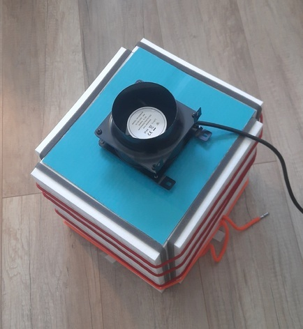

author: niplav, created: 2024-01-30, modified: 2024-01-30, language: english, status: finished, importance: 2, confidence: log
Report of having built a cuboid.
Inspired by dynomight 2021a, I decided to replicate their design for the cuboid (the cheaper box fan air purifier was intolerably violating my æsthetic sensibilities). The design is, incidentally, very similar to the Corsi-Rosenthal Box.
First, I arranged the four filters as described in dynomight 2021b and tied them together using some pieces of string I had lying around (the bungee cords I had ordered were too short and would have broken the filters—a lesson in thinking about dependencies! Fortunately they weren't expensive), with the red rope giving the contraption a nice kinbaku æsthetic.
I then cut out two pieces of cardboard () that fit right into the column, for stabilization,

and also a piece () that I could impishly tape to the bottom of the cuboid ("works for me").

Next, the fan arrived, so I cut out a lid from some cardboard I got my queal packages in (again , as with the bottom), and from that lid I cut a 950mm diameter circle for the fan.

Assembling the cuboid was now easy: Just put the lid on top, put in the fan, plug in the fan, and voilà:


My cuboid ~3200mm wide, ~2900mm deep, and ~3900mm high (the knots in the cords make exact measurement difficult). Æsthetically, the three different primary colors are a bit much, but I'm not that bothered by it (although if someone wants to set up a line of turbo cuboids, all red and black and sleek, sign me up as interested).
Probably! I haven't measured air quality yet, but at least it appears to be sucking the air through the filters:
I also haven't checked the energy usage yet.
My cuboid is loud enough that I probably won't be running it while I try to sleep: With a background noise of ~18dB, the cuboid raises that to ~40dB at 1m horizontal and 0m vertical distance (measured using Sound Meter):
, and the y-axis being 0 to 100 (dB). The chart is barely under 20 for x between 0 and 5 seconds, then for two seconds there are two spikes, after which the line rises to 40dB, where it stays until x is 22. Then, there is a short
spike, after which the curve falls geometrically, until it reaches ~20dB at second 25, where it stays until second 30.")
My cuboid was a bit pricier than the one by dynomight, but not by much: 4 filters, each 23€, the fan with 38€, and the two bungee cords for 2€ (I don't count them since I didn't use them in the end): 130€ in total.
It took me a quite a while longer to assemble my cuboid than the alleged 5 minutes: I would estimate that I spent at least 90 minutes one it (plus another 45 minutes writing this note).
But, all in all, I'm very happy with my little cuboid. It's humming along to some Beethoven while I write this.